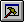

Firmware Studio Development Environment
| Host | Builder | Tester | Tokenizer | Forthing |
Builder Interpreter
The builder interpreter is used for building ROM code. Instead of appending code to the host PC's dictionary, it appends machine code to a ROM image. Each kind of processor supported by Firmware Studio has a file that extends the builder lexicon to support a particular processor. BLDMCF.G, for example, is the builder file that configures Firmware Studio to compile code for a Coldfire CPU.
You can enter Builder mode by pressing , typing BI or BUILDING, or picking from a menu. The demo programs invoke BUILDING for you. You probably won't have occasion to compile new words from the command line, but will have to know how the builder interpreter works.
The builder interpreter has special compilation words at the top of the search order. During compilation, the interpreter usually skips the top of the search order and finds the word in a target vocabulary. Upon executing the word, it finds that a pointer to that word's header has been set and uses data from the header to compile a call to the word. A more detailed description is shown below:
| The BUILDER wordlist is at the top of
the search order, and one of the token wordlists (CORE,
for example) is next on the wordlist. During compilation,
the top (BUILDER) wordlist is excluded to minimize name
clashes. For example, a target word that uses HERE in its
definition isn't affected by the presence of HERE in the
BUILDER wordlist. Search the search order for the word |
The ROM builder part of Firmware Studio uses the following defered words for processor-specific compile behaviors. Defered words are a Forth way to provide late binding, and have been used since long before OOP was in style. Browse the source file TBUILD.G to see how the builder uses the defered words listed below. The builder for each processor defines actions for them. See BLDAVR.G, BLD8051.G, BLDMCF.G, etc.
| defer colonmark | ( -- ) |
| ' noop is colonmark | Marks the beginning of a colon definition, does nothing if subroutine threading. |
| defer compilelit | ( x -- ) |
| :noname ." lit:" h. ; is compilelit | Compiles code to push a number onto the stack. |
| defer compilecall | ( t-addr -- ) |
| :noname ." call:" h. ; is compilecall | Compiles code to call a subroutine. |
| defer compilemacro | ( t-addr -- ) |
| :noname ." macro:" h. ; is compilemacro | Copies inline code, maybe does some peephole optimization. |
| defer compileexit | ( -- ) |
| :noname ." <exit>" ; is compileexit | Compiles code to exit a word. |
| defer ins-align | ( -- ) |
| ' noop is ins-align | Aligns on instruction boundary. Can be used by MISC type processors. |
| defer >mark | ( -- t-addr flag ) |
| :noname ." >mark" 0 0 ; is >mark | Compiles and marks an unconditional forward branch. |
| defer >-mark | ( -- t-addr flag ) |
| :noname .">-mark" 0 0 ; is >-mark | Compiles and marks a conditional forward branch: Branch if Plus. |
| defer >0mark | ( -- t-addr flag ) |
| :noname ." >0mark" 0 0 ; is >0mark | Compiles and marks a conditional forward branch: Branch if Zero. |
| defer >mmark | ( -- t-addr flag ) |
| :noname ." >mmark" 0 0 ; is >mmark | Compiles and marks a MULTI..REPEAT control structure. |
| defer >resolve | ( t-addr flag -- ) |
| :noname 2drop ; is >resolve | Resolves a forward branch. |
| defer <mark | ( -- t-addr flag ) |
| :noname ."<mark" 0 0 ; is <mark | Marks the destination of a backward branch. |
| defer <resolve | ( t-addr flag -- ) |
| :noname 2drop ; is <resolve | Compiles a backward unconditional branch. |
| defer <0resolve | ( t-addr flag -- ) |
| :noname 2drop ; is <0resolve | Compiles a backward conditional branch. Branch if Zero. |
| defer <-resolve | ( t-addr flag -- ) |
| :noname 2drop ; is <-resolve | Compiles a backward conditional branch. Branch if Plus. |
| defer compileoffset | ( -- ) |
| ' noop is compileoffset | Compiles code to add offset to address on the stack |
| defer local-fetch | ( n -- ) |
| :noname ." Local@:" . ; is local-fetch | Compiles code to fetch a local at cell n on the return or frame stack. |
| defer local-store | ( n -- ) |
| :noname ." Local!:" . ; is local-store | Compiles code to store to cell n on the return or frame stack. |
| defer local-begin | ( #locals #args -- ) |
| :noname 2drop ; is local-begin | Compiles code to move parameters to the return or frame stack. |
| defer local-end | ( #locals -- ) |
| :noname ." End-local " . ; is local-end | Compiles code to remove the local frame. |